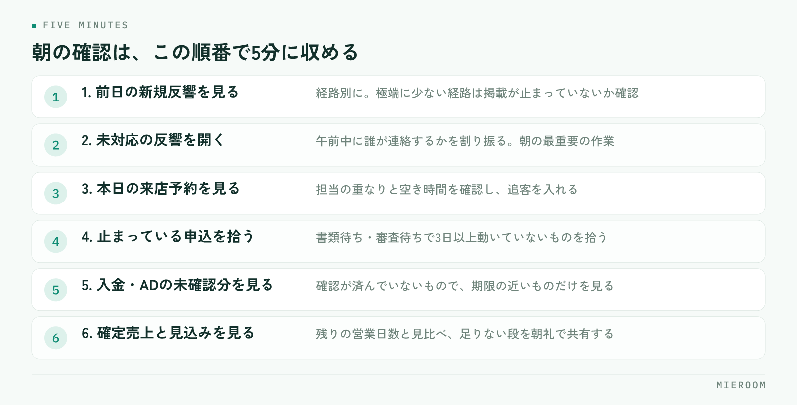

毎朝、何の数字を見ればいいか決まっていないと、店長の朝は「昨日どうだった？」と聞くことから始まります。聞いた答えは記憶に残らず、月末になって初めて差に気づきます。毎朝見る数字を6つに絞り、同じ並びで同じ順番に見ると決めるだけで、気づくのが3週間早くなります。
この記事の結論
毎朝見る数字は、増やすのではなく入口から出口の順に6つへ絞るのが続きます。前日の反響、未対応の反響、本日の来店予約、進行中の申込、入金・ADの未確認、今月の確定売上と見込み。この6つを同じ画面で同じ順に見れば、朝の確認は5分で終わります。
毎朝の数字は、見る目的を決めないと増え続ける
数字を見る習慣が続かない店舗には、だいたい同じ理由があります。見る項目が多すぎることです。本部から送られてくる表、ポータルサイトの管理画面、自店の管理表、スタッフの日報。それぞれに数字が載っているので、全部見ようとすると30分かかり、数日で止まります。
朝に数字を見る目的は、月の成績を評価することではありません。今日の動きを決めることです。評価は月末にやればよく、朝に必要なのは「今日、誰が、何に手を付けるか」を決められる材料だけです。
この目的で絞ると、見る数字は「止まっているもの」と「今日動くもの」の2種類に分かれます。止まっているものは手を打つ対象で、今日動くものは人の配置を決める材料です。どちらにも関係しない数字は、朝に見る必要がありません。先月比の達成率や、年間の累計は、朝ではなく月初にまとめて見る項目です。
見る頻度の全体像を決めたい場合は、一日・一週間・一か月で分ける考え方を賃貸仲介の店長がやることに整理しています。この記事では、そのうち「毎朝」の部分だけを詳しく扱います。
毎朝見る数字は、この6つに絞る
朝に見る数字を、入口から出口の順に並べます。賃貸仲介の店舗なら、次の6つで足ります。
| 見る数字 | 何を判断するか |
|---|---|
| 前日の新規反響の件数（経路別） | 集客の流れが止まっていないか |
| 未対応の反響の件数 | 今日いちばん先に手を付ける対象 |
| 本日の来店予約の件数と担当 | 人の配置と、空き時間の使い方 |
| 進行中の申込の件数と、止まっている案件 | 書類待ち・審査待ちの詰まり |
| 入金・ADの未確認分 | 月末に慌てる原因を先に潰す |
| 今月の確定売上と見込み | 残りの日数で何が必要か |
上の3つが入口側（集客と来店）、下の3つが出口側（契約と売上）です。朝はこの順に上から見ます。入口が止まっているのに出口の数字だけを眺めても、打てる手がないからです。
逆に、入口は足りているのに売上が伸びていないなら、途中のどこかで落ちています。その場合は未対応の反響と進行中の申込を見れば、だいたい場所が分かります。6つの並びは、そのまま原因をたどる順番になっています。
1画面にまとめる並べ方：左から入口、右へ出口
数字が複数の場所に散っていると、朝の確認は「開く作業」になります。ポータルの管理画面を開き、管理表を開き、入金の表を開く。それだけで10分が過ぎます。
まとめるときの考え方は単純です。1つの画面に、入口から出口の順で左から右へ並べる。画面の左に前日の反響と未対応件数、中央に本日の来店予約、右に申込の進行状況と今月の売上を置きます。視線が左から右に動くあいだに、店の今日が分かる形です。
並べるときの決めごとは3つあります。
- 件数と、中身を開く入口の両方を置く。件数だけでは手が打てません。「未対応3件」の横から、その3件の一覧に移れる形にします。
- 数字は昨日までの実績と、今日の予定を分ける。混ぜると「増えた／減った」が読めなくなります。
- 色や強調は、手を打つべきものだけに付ける。全部が目立つ画面は、何も目立たない画面と同じです。
システムがなくても、朝の確認用に1枚のシートを作る方法で始められます。前日の反響・未対応・本日の来店・進行中の申込・入金待ち・今月の売上の6行だけのシートです。続けられるかを確かめてから、入力を自動にする順番で構いません。
数字の定義を店の中で固定する
朝の数字がぶれる最大の原因は、集計の仕組みではなく言葉の定義です。同じ「反響」という言葉を、人によって違う意味で使っていると、数字は毎日変わります。
| 言葉 | 定義がぶれる例 | 固定する決め方 |
|---|---|---|
| 反響 | 問い合わせ全部か、追客できる連絡先が取れたものか | 連絡先が残ったものを1件と数える |
| 未対応 | 返信していないものか、通話がつながっていないものか | 初回の接触が済んでいないものを未対応とする |
| 来店 | 予約来店だけか、飛び込みも含むか | 両方含め、予約か飛び込みかを区別して記録する |
| 申込 | 申込書を受け取った時点か、審査に出した時点か | 申込書を受け取った時点を起点にする |
| 確定売上 | 契約した時点か、入金が済んだ時点か | 入金が確認できたものを確定、それ以外は見込み |
定義は正解があるものではなく、店の中で同じであればよいものです。上の決め方はひとつの例で、自店の運用に合わせて変えて構いません。大事なのは、決めた定義を紙に書いて店に置き、新しいスタッフが入ったときにそれを渡すことです。
とくに確定売上と見込みの区別は、朝の数字で誤解が生まれやすいところです。契約本数で売上を数えていると、入金が遅れている案件が売上に入ったままになり、月末に数字が下がります。最初から分けて記録しておけば、下がることはありません。月末の集計を軽くする入力の決め方は月末の売上集計を自動化するにまとめています。
毎朝5分で終わらせる見方と、動き方
朝の確認は、見るだけで終わらせず、手を打つところまでを5分に収めます。手順を決めておけば、店長が不在の日でも誰かが代われます。

- 前日の新規反響を経路別に見る（30秒）。昨日より極端に少ない経路があれば、掲載が止まっていないかを後で確認する項目としてメモします。
- 未対応の反響を開く（1分）。件数を見て、今日の午前中に誰が連絡するかを担当に割り振ります。ここが朝のいちばん重要な作業です。
- 本日の来店予約を見る（1分）。担当の重なりと空き時間を確認し、空いている時間に未対応の連絡や追客を入れます。
- 進行中の申込で、止まっている案件を見る（1分）。書類待ち・審査待ちで3日以上動いていないものを拾い、今日連絡する相手を決めます。
- 入金・ADの未確認分を見る（30秒）。確認が済んでいないものに期限の近いものがないかだけを見ます。
- 今月の確定売上と見込みを見る（1分）。残りの営業日数と見比べ、足りないなら何の段を増やすかを朝礼で共有します。
この6手順の成果は、数字を把握することではなく、朝のうちに担当と締め切りが決まることです。朝礼で「未対応3件は午前中に誰が」「止まっている申込2件は誰が」と言い切れていれば、その日の確認は成功しています。
よくある失敗とその避け方
項目を増やしてしまう。見たい数字が増えるのは自然ですが、増えた分だけ朝が長くなり、数週間で止まります。新しく足すときは、代わりに1つ外してください。6つという数を固定するのが続けるコツです。
昨日の結果を責める場に使う。数字が「できていない人を見つける道具」になると、入力が止まります。朝に見るのは人ではなく案件です。止まっている案件に誰が手を付けるかを決める場にしてください。
数字を集めるのが朝の仕事になる。各画面から転記して朝の表を作っていると、作る側の負担で終わります。集計の作業が5分を超えるなら、入力の形を見直す段階です。
定義を決めずに比べる。先月と今月で「反響」の数え方が違うと、増減はただのノイズです。定義を変えたときは、変えた日を記録に残します。
未対応を件数だけで見る。3件のうち1件が3日前のものなら、優先順位は変わります。件数の横に、いちばん古いものの経過日数も置いてください。
見込みを実績と混ぜる。見込みが入った数字で判断すると、達成しているつもりで月末を迎えます。確定と見込みは最初から分けて並べます。
自分たちで進める場合と、ツールに任せる場合の分かれ目
ここは一般論として、判断の基準だけを整理します。どちらが優れているという話ではなく、入力の手間と店舗の規模で決まります。
自分たちで表を作って続ける形が向くのは、スタッフの人数が少なく、反響や申込の件数も一人で把握できる範囲にある場合です。朝のシートを手で埋める作業が数分で終わるなら、わざわざ仕組みを変える必要はありません。むしろ手で書くほうが、数字の中身を覚えられます。
ツールに任せる形が向くのは、転記の手間が朝の時間を食い始めたとき、スタッフが増えて誰が入力したか分からなくなったとき、店舗が2つ以上になって店ごとの比較が必要になったときです。判断の分かれ目は数字を見る習慣があるかどうかではなく、同じ情報を2回以上書き写しているかどうかです。反響を台帳に写し、申込を管理表に写し、入金を別の表に写しているなら、どこかで数字が食い違います。
もうひとつの基準は、朝の数字を店長以外が出せるかどうかです。店長しか集計できない形だと、不在の日に止まります。誰が開いても同じ数字が出る状態になっているかを確かめてください。
よくある質問
朝の確認は何時にやるのがよいですか？
スタッフが少ない店舗でも6つ全部見る必要がありますか？
数字の入力をスタッフに任せると、抜けが出ます。
反響の経路別の件数は、どこまで細かく分けますか？
売上の見込みはどう計算すればよいですか？
まとめ：見る数字を6つに固定すれば、朝は5分で終わる
毎朝の数字は、増やすほど見なくなります。前日の反響、未対応の反響、本日の来店予約、進行中の申込、入金・ADの未確認、今月の確定売上と見込み。この6つを入口から出口の順に1画面へ並べ、見たあとに担当と締め切りを決めるところまでを手順にすれば、朝の確認は5分で終わり、気づくのが月末より早くなります。
ミエルームなら、この記事で挙げた「数字が複数の画面に散っていて朝が開く作業になる」「確定売上と見込みが混ざる」「入金やADの確認が月末までわからない」という詰まりに対して、反響管理・接客管理・申込管理表・売上管理を1つの画面でつなぎ、フォームやメールからの反響の自動取込で入力の手間を減らし、申込から入金・後ADまでを案件ごとに1行で記録しながら確定売上と見込みを分けて表示します。朝に見る数字がそのまま画面に並ぶので、転記して表を作る時間がなくなり、店長が不在の日でも同じ数字を誰でも開けます。機能の一覧と画面はミエルームの製品ページでご覧いただけます。資料のご請求やデモアカウントの発行は、この下のボタンからお気軽にどうぞ。